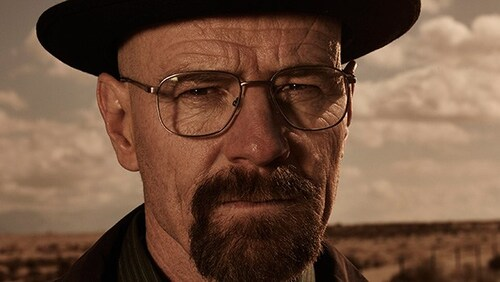
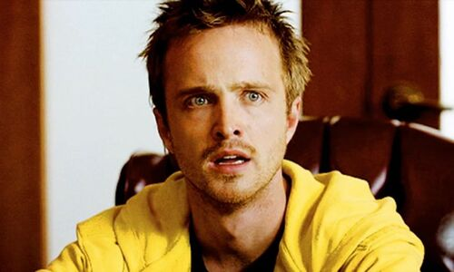
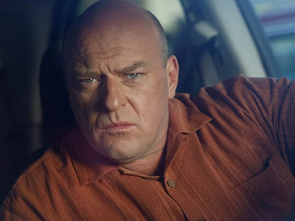
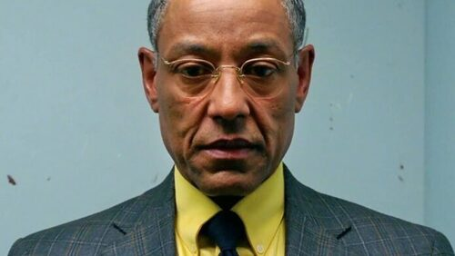

Walter White (Bryan Cranston) é um professor de química na casa dos 50 anos que trabalha em uma escola secundária no Novo México.
Para atender às necessidades de Skyler (Anna Gunn), sua esposa grávida, e Walt Junior (RJ Mitte), seu filho deficiente físico, ele tem que
trabalhar duplamente. Sua vida fica ainda mais complicada quando descobre que está sofrendo de um câncer de pulmão incurável.
Para aumentar rapidamente a quantidade de dinheiro que deixaria para sua família após sua morte, Walter usa seu conhecimento de química
para fazer e vender metanfetamina, uma droga sintética. Ele conta com a ajuda do ex-aluno e pequeno traficante Jesse (Aaron Paul) e enfrenta
vários desafios, incluindo o fato de seu concunhado ser um importante nome dentro da Agência Anti-Drogas da região.
Formato: Série
Gênero: Ação, Suspense, Drama e Crime
Data de lançamento: 20 de Janeiro de 2008
Quantidade de episódios: 62
Duração: 47-58 minutos
| Nome | Atriz(or) | Descrição | Foto |
|---|---|---|---|
| Walter White/ Heisenberg |
Bryan Cranston | Walter White era um químico promissor e um dos fundadores da bilionária empresa Gray Matter Technologies. No entanto, ele deixou a
empresa cedo, vendendo suas ações por apenas US$ 5 mil por razões pessoais. Isso o levou a se tornar um professor de química
insatisfeito e desiludido. Após ser diagnosticado com câncer de pulmão em estágio avançado, Walter decide fabricar metanfetamina
para assegurar a estabilidade financeira de sua família após sua morte.
Voltar |
 |
| Skyler White | Anna Gunn | Skyler White é a esposa de Walter White e irmã de Marie Schrader. Ela e Walter têm um filho adolescente, Walter White Jr., e uma
filha pequena, Holly White. Para ajudar a sustentar a família, Skyler recorreu a diversas fontes de renda, como escrever contos,
vender itens no eBay e trabalhar como contadora. Eventualmente, ela também auxiliou seu marido na lavagem de dinheiro.
Voltar |
|
| Jesse Pinkman | Aaron Paul | Originalmente um traficante de metanfetamina de baixo escalão que trabalhou com seu amigo e colega Emilio Koyama, Jesse Pinkman é
mais conhecido por ser o ex-parceiro de negócios e cozinheiro de metanfetamina do seu antigo professor de química, Walter White.
Ele se juntou a Walt por dois anos para ajudá-lo a produzir metanfetamina cristal quimicamente pura, permitindo que Walt
sustentasse sua família.
Voltar |
 |
| Hank Schrader | Dean Norris | Hank Schrader é o cunhado de Walter White e um agente da Drug Enforcement Administration (DEA) em Albuquerque, Novo México. Ao longo
da série, ele lidera a investigação sobre o misterioso cozinheiro de metanfetamina conhecido como "Heisenberg", sem saber que o
traficante em questão é, na verdade, seu próprio cunhado.
Voltar |
 |
| Gustavo Fring | Giancarlo Esposito | Inicialmente, Gustavo Fring colaborava com o cartel de drogas mexicano para distribuir cocaína. No entanto, ele rompeu com o cartel e
começou a distribuir metanfetamina por conta própria, estabelecendo um império de drogas independente. Eventualmente, seu império
se tornou a operação de drogas mais bem-sucedida da história dos Estados Unidos, até ser superado pelo império de drogas criado
por seu ex-funcionário, Walter White.
Voltar |
 |